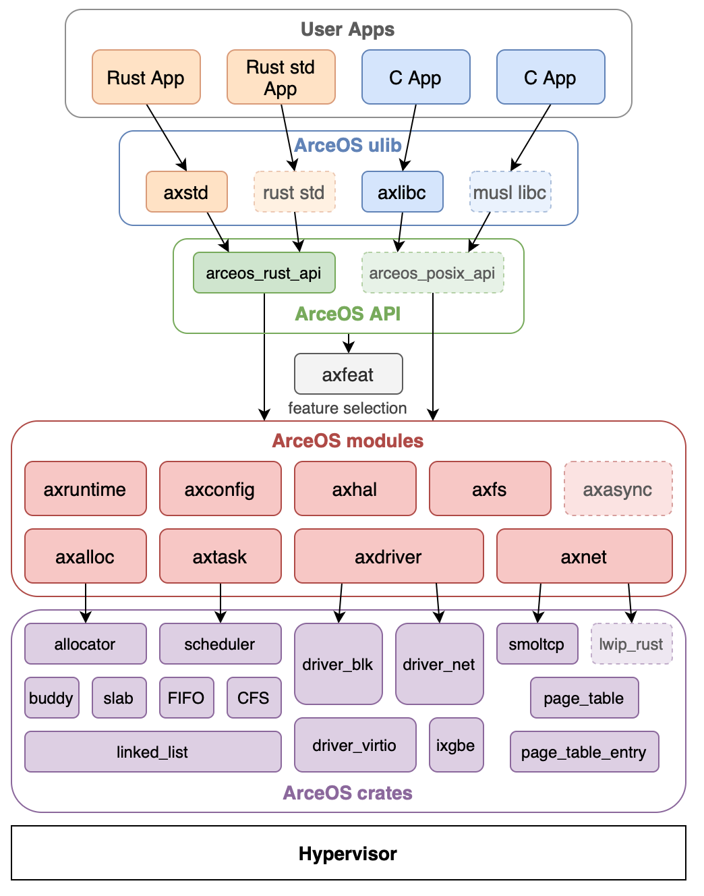
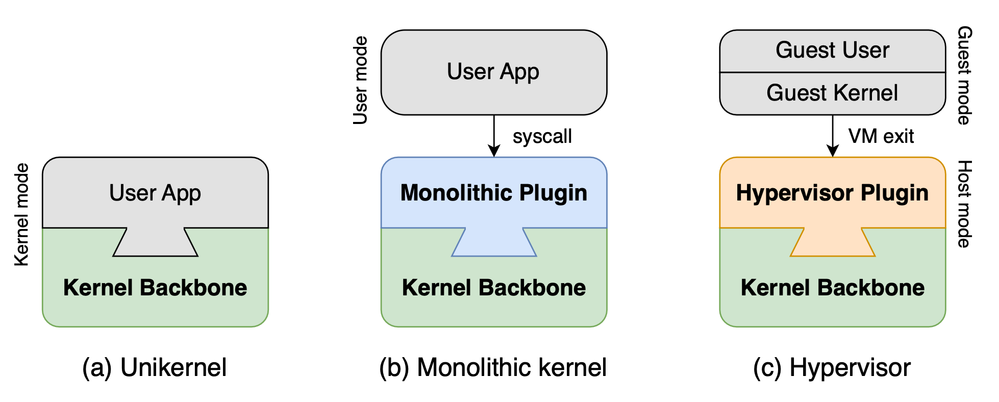

实验环境配置
本章我们将从零开始完成环境配置，并在 Starry 上开始运行包括 Hello World 在内的各种测例。整个流程分为以下几个部分：
需要指明的是，本文档是对组件化内核开发的一个指导。由于 Starry 本身还在积极开发中，许多输出、依赖信息可能发生改变。截至最后一次修改，我们使用的仓库的版本信息为：
如果无特殊说明，我们将使用上述版本信息作为参考。
实验环境配置
TODO，参考 CICD
运行 Starry 的测例
本章我们将介绍如何在 Starry 上运行现有的测例，从而完成本地测试。
准备基座仓库
Starry 本身是基于 ArceOS 开发的，利用异构组件化内核的思想在 Unikernel 上层添加实现宏内核扩展。因此我们需要先 clone 基座仓库到本地。
# Clone the base repository
./scripts/get_deps.sh
运行指令
我们先跑起来一个最简单的测试用例，并查看输出结果。
我们使用 nimbos 所使用到的测例 为例。这一测例由于重新编写了使用的依赖库，因此需要用到的 syscall 会较少，适合为初级形态的内核进行测试。
运行指令为：
# Build user applications
make user_apps ARCH=x86_64
# Build kernel
make ARCH=x86_64 LOG=off build
# Run kernel
make ARCH=x86_64 LOG=off run
期望输出为：
smp = 1
build_mode = release
log_level = off
Hello world from user mode program!
Hello, world!
Hello, I am process 2.
Back in process 2, iteration 0.
Back in process 2, iteration 1.
Back in process 2, iteration 2.
Back in process 2, iteration 3.
Back in process 2, iteration 4.
yield passed!
into sleep test!
simple_sleep passed!
测例执行逻辑
目前 Starry 主线未支持从文件镜像中读取已经编译好的二进制测例，相关的测例存储在 apps/ 目录下。目前可以看到测例目录包括 nimbos 和 libc，分别代表 nimbos 的测例和 libc(musl) 的测例。
我们可以利用环境变量 AX_TESTCASE 指定需要编译的测例，例如：
make user_apps ARCH=x86_64 AX_TESTCASE=libc
即可编译 libc 测例为 x86_64 架构的二进制可执行文件。
之后我们在 build.rs 读取所有的可执行文件，并按序排列之后形成 link_app.S。在 src/loader.rs 下我们调用 global_asm 语句将测例的二进制文件直接和内核打包在一起，从而让内核能够直接通过 ramfs 读取、运行测例。
#![allow(unused)] fn main() { global_asm!(include_str!(concat!(env!("OUT_DIR"), "/link_app.S"))); }
这一步操作非常类似 rCore-Tutorial 的 多道程序与分时多任务，可以进行借鉴。
之后在 src/main.rs 中我们会读取环境变量中指定的 AX_TESTCASES_LIST 变量(由 Makefile 生成)，从而了解目前要运行的所有测例内容，从而逐个读取测例完成测试。
利用文件镜像读取测例
将测例打包为 ramfs 并不是长久之策，只是开发过程的一个过渡。将测例文件打包为镜像进行读取的实现可以参考这里。
当将这一修改合入主线之后，我们会更新本文档。
为 Starry 添加新测例
在进行本章节之前，建议已经实现利用文件镜像读取测例，从而可以更方便地添加新测例。假设我们已经实现了利用文件系统读取测例，那么添加新测例目标就改变为编译出一个带有新测例的文件系统镜像。
从已有二进制文件编译文件系统镜像
目前 Starry 主线仅支持 fat32 文件系统，但我们之前做过 ext4 文件系统的尝试。因此我们同时介绍生成 fat32 和 ext4 文件系统镜像的方法。
以下脚本来自于 build_img.sh
#!/bin/sh
################################################################
# MacOS : brew install dosfstools
# Ubuntu : apt-get install dosfstools
# Usage:
# build_img.sh -a [arch] -fs [ext4|fat32] -file [testcase] -s [size]
################################################################
# default setting
arch=x86_64
fs=fat32
size=30
FILE=
display_help()
{
echo ""
echo "./build_img.sh -a [arch] -fs [filesystem] -file [testcase]"
# 若不指定参数，则使用默认的测例
echo " -a | --arch architecture: x86_64|riscv64|aarch64", default is x86_64
echo " -fs | --filesystem filesystem: ext4|fat32", default is fat32
echo " -file | --testcase directory of the binary testcases"
echo " -s | --size size of the disk image in 4MB batch size, default is set to 30, which means 120MB disk image"
echo " -h | --help display help"
echo ""
exit 1
}
# 可能接受四类参数 -a [arch] -fs [filesystem] -file [testcase] -s [size]
# 但是不一定只有一个参数，所以使用 while 循环
while [ "$1" != "" ]; do
case $1 in
-a | --arch ) shift
arch=$1
;;
-fs | --filesystem ) shift
fs=$1
;;
-file | --testcase ) shift
FILE=$1
;;
-s | --size ) shift
size=$1
;;
-h | --help ) display_help
exit
;;
* ) display_help
exit 1
esac
shift
done
rm -f disk.img
dd if=/dev/zero of=disk.img bs=4M count=$size
if [ "$fs" = "ext4" ]; then
mkfs.ext4 -t ext4 disk.img
else if [ "$fs" = "fat32" ]; then
fs=fat32
mkfs.vfat -F 32 disk.img
else
echo "Unknown filesystem: $fs"
exit 1
fi
fi
mkdir -p mnt
#### 添加 MacOS 支持
os=`uname -s`
if [ "x$os" = "xDarwin" ];then
hdiutil detach mnt > /dev/null 2>&1
hdiutil attach disk.img -mountpoint mnt
echo "Copying $arch $fs $FILE/* to disk"
cp -r ./$FILE/* ./mnt/
hdiutil detach mnt
chmod 777 disk.img
else
sudo mount disk.img mnt
# 根据命令行参数生成对应的测例
echo "Copying $arch $fs $FILE/* to disk"
sudo cp -r ./$FILE/* ./mnt/
sudo umount mnt
sudo rm -rf mnt
sudo chmod 777 disk.img
fi
可以通过 ./build_img.sh --help 查看相关使用方式。一个使用例为：
./build_img.sh -a x86_64 -fs fat32 -file apps/nimbos/build -s 30
即可在当前目录下生成一个 fat32 文件系统镜像 disk.img，其中包含了 apps/nimbos/build 目录下的所有文件。
添加新测例
添加源代码
目前 Starry 主线的测例均是通过源代码编译得到的。一个规范的方式是将新测例的源代码放置在 apps/<testcases> 目录下，并可以支持通过 make user_apps 统一完成编译生成至 apps/<testcases>/build 目录下。可以参考 nimbos 测例和 libc 测例。
添加二进制文件
对于宏内核来说，相当多的测例是通过二进制文件进行测试的。但直接上传二进制文件会导致仓库体积过大。目前常见的解决方案是将测试文件上传到某一个固定的 release 版本中，然后通过 wget 脚本下载到本地进行测试。目前暂时未完成相关工作。
Starry 概述
本章我们将介绍 Starry 的背景、内核结构设计和实现功能。整个流程分为以下几个部分：
背景说明
TODO
-
基座仓库 arceos：https://github.com/arceos-org/arceos
-
旧版 Starry 仓库: https://github.com/Starry-OS/Starry-Old
-
starry-next 仓库:
- 上游仓库: https://github.com/arceos-org/starry-next
- 本文档基于的是维护更加及时的下游仓库: https://github.com/Azure-stars/starry-next
内核结构设计
基座内核设计
基座内核 ArceOS 以组件化内核的思想进行设计，设计架构图如下：

每一个模块的简要介绍如下：
-
crates layer: 内核无关组件，如
page_table,slab_allocator,spinlock等，可以方便地给其他内核进行复用 -
modules layer: 内核相关的组件。他们与内核的核心功能相关，不容易解耦出来给其他内核使用，但是对内核本身的功能以及重构有重要作用。
- axalloc: 用于内核内存分配的模块
- axfs: 文件系统管理模块, 接入了 fat32
- axhal: 硬件抽象层模块
- axnet: 网络管理模块，接入了 smoltcp 网络协议栈
- axdriver: 驱动管理模块
- axtask: 任务管理模块，包括任务单元的定义和调度功能的实现
- axsync: 同步原语模块，包括一些 mutex 等同步原语等实现
- axmm: 地址空间管理模块，包括内存映射等功能的实现
-
axfeat: feature 描述层，用于进行 feature 的定制和转发，从而实现组件定制化的功能
- feature 是 rust 条件编译的重要环节，详见文档
-
api layer: ArceOS 对外提供的接口层
- arceos_posix_api: POSIX 接口兼容实现层，在初始时是调用了 Unikernel 的接口，在 Starry 中会为其加入更多宏内核的支持
- arceos_api: Unikernel 自身提供的接口层，用于其他应用程序调用内核的功能
-
ulib layer: 用户库层，将 api layer 的接口进一步封装为更加兼容、常见的接口
- axstd: rust std 的 Unikernel 实现，它调用的是 arceos 的功能，但是提供了更加常见的 std 接口
- axlibc: libc 的 Unikernel 实现，它调用的是 arceos 的功能，但是提供了更加常见的 libc 接口
-
user layer: 用户层，包括用户程序和用户程序的测试用例
- rust app: rust 语言编写的用户程序，调用 axstd 从而调用 Unikernel 内核的功能
- c app: c 语言编写的用户程序，与 axlibc 链接从而调用 Unikernel 内核的功能
异构内核设计实现
设计目标
ArceOS 希望实现灵活内核架构，即是通过使用一套框架搭建不同架构的内核，在内核架构和功能上都达到定制的目的，从而做到 one architecture to build all。它有如下特性：
-
用一套框架搭建各种架构的内核
- Unikernel
- Macrokernel
- Microkernel
- Hypervisor
- New structures defined by the user
-
最大化组件重用
- 减少重复编码
- 保持功能一致性
-
最大化灵活性
- 易于扩展到新的内核架构
设计思路
基本思路：
- Unikernel 是所有内核架构的交集
- 将可定制的 Unikernel 作为基本框架与执行环境（Kernel Backbone）
- 将各种架构的内核视为 Unikernel 上的 App（Kernel Plugin）
利用 Backbone 和 Plugin 的关系，我们可以实现不同架构的内核，对于宏内核和 hypervisor 的设计图如下： 
通过运行不同的内核应用扩展，我们就可以定制不同架构的内核。starry-next 即是对宏内核扩展的实践。我们期望做到：在不需要完全了解底层内核具体技术实现的情况下，通过提供的接口，即可完成宏内核功能的扩展。
starry-next 如何实现宏内核功能
starry-next 是对 ArceOS 的扩展。依据 Plugin 的设计，它作为 ArceOS 的一个应用（这里我们称为内核应用）开始运行。对应在 Makefile 下的执行逻辑是：
AX_ROOT ?= $(PWD)/.arceos
# Makefile under starry-next folders
build run justrun debug disasm: ax_root
@make -C $(AX_ROOT) A=$(PWD) FEATURES=$(FEATURES) $@
这里可以看到它通过 -C $(AX_ROOT) 指定了调用 ArceOS 的 Makefile，并制定运行的内核应用为当前目录，即 starry-next。
查看 starry-next 的 Cargo.toml 文件如下：
[dependencies]
log = "0.4"
linkme = "0.3"
axerrno = "0.1"
memory_addr = "0.3"
xmas-elf = "0.9"
bitflags = "2.6"
kernel-elf-parser = "0.1.0"
num_enum = { version = "0.7", default-features = false }
syscalls = { version = "0.6", default-features = false }
axstd = { git = "https://github.com/arceos-org/arceos.git", branch = "monolithic", features = ["paging"] }
axhal = { git = "https://github.com/arceos-org/arceos.git", branch = "monolithic", features = ["uspace"] }
axmm = { git = "https://github.com/arceos-org/arceos.git", branch = "monolithic" }
axtask = { git = "https://github.com/arceos-org/arceos.git", branch = "monolithic" }
axsync = { git = "https://github.com/arceos-org/arceos.git", branch = "monolithic" }
axruntime = { git = "https://github.com/arceos-org/arceos.git", branch = "monolithic", features = ["multitask"] }
arceos_posix_api = { git = "https://github.com/arceos-org/arceos.git", branch = "monolithic" }
[target.'cfg(target_arch = "x86_64")'.dependencies]
x86 = "0.52"
[build-dependencies]
toml_edit = "0.22"
由于目前宏内核实现仍然未合入主线，因此我们手动指定了
monolithic分支。
这里比较重要的是对于 axhal 启动了 uspace feature, axhal 模块中标注了 uspace feature 的实现可以看到，它包含如下内容：
UspaceContext实现，包含了用户态上下文的定义与进入用户态的初始化代码- Syscall trap 接收与转发
- User trap and exit 实现
当添加了这些必要内容之后，我们就对 Unikernel 提供的 Task 结构添加了进入用户态的能力。在
src/task.rs下我们调用spawn_user_task的时候，就可以创建一个即将进入用户态、运行用户应用的任务了。
#![allow(unused)] fn main() { pub fn spawn_user_task(aspace: Arc<Mutex<AddrSpace>>, uctx: UspaceContext) -> AxTaskRef { let mut task = TaskInner::new( || { let curr = axtask::current(); let kstack_top = curr.kernel_stack_top().unwrap(); // 设置任务上下文，让任务在开始被调度之后尝试进入用户态 unsafe { curr.task_ext().uctx.enter_uspace(kstack_top) }; }, "userboot".into(), crate::config::KERNEL_STACK_SIZE, ); task.ctx_mut() .set_page_table_root(aspace.lock().page_table_root()); task.init_task_ext(TaskExt::new(uctx, aspace)); axtask::spawn_task(task) } }
按照这个思路，我们可以做到在最小化添加 uspace feature 的情况下，实现宏内核的功能扩展。Unikernel 已有的任务调度、文件系统、网络栈等服务都可以直接被宏内核所复用。此后只需要根据 POSIX syscall 标准，在上层的内核应用中实现对应的系统调用，即可适配更多的应用。
Starry 实现功能
本文档所指的 arceos 宏内核扩展是最近正在重构的 Starry。事实上在两年前我们开发了第一版的 Starry，并作为作品参与全国大学生计算机系统能力大赛内核实现赛道，在两年期间也实现了许多功能。本章节讲解的是第一版 Starry（或者可以称为 Old-Starry）的功能。
支持的标准测例
Starry 目前支持的测例包括：
- busybox
- lmbench
- unixbench
- libc-test
- libc-bench
- cyclitest
- netperf/iperf
支持的经典应用
-
Tokio：Starry 已经可以运行 Tokio 的 examples
-
Dora： 面向数据流的机器人应用程序 Dora-rs 是一个中间件应用。他们通过使用共享内存和 Apache Arrow 实现内存零拷贝，降低传统的机器人框架中间件如 ROS2 的通信开销，在性能上表现出了较大的优势。 以下为 Dora 的相关资料：
- 官网： https://dora-rs.ai/
- 代码仓库： https://github.com/dora-rs/dora
关于 Dora 的详细说明和 Dora on ArceOS 的支持说明可以查看 Dora-analysis。
-
gcc：可以运行 gcc 编译器编译最基本的程序
-
redis：可以运行 redis 数据库，并与局域网内其他主机交互存储数据
在组件化系统上开发新内容
本章节将描述如何在组件化系统上开发新内容。我们将会讨论如何利用组件化的思想，降低开发新功能的难度，并给出一些功能示例，帮助你更好地理解组件化的概念。
本章的流程如下：
添加一个新的 syscall
我们以添加一个新的 syscall 为例，说明组件化内核开发的流程和特点。基于的初始 commit 为here。
模块结构
组件化的思想允许我们尽可能地为同一内核的不同形态，甚至是不同内核来复用相同的实现。对于同一内核来说，可以复用的内容更多，不仅包括内核无关模块(crates layer)，还包括内核相关模块(modules layer)。前文提到了 modules layer 中的 arceos_posix_api 是 Unikernel 为了实现 POSIX 接口兼容而适配的内容。事实上对于宏内核和 Unikernel 来说，POSIX 接口的许多操作语义是通用的，只是对于资源归属不同。
一个例子是打开文件，对于 Unikernel 来说打开的文件描述符是归属于全局的，而对于宏内核来说，每一个进程都有自己的文件描述符表。但是打开文件的操作语义是一样的，所以我们可以将打开文件的操作语义抽象出来，放在 modules layer 中，供不同形态的内核复用。
因此对于 Starry 开发而言，我们可以充分利用 arceos_posix_api 等模块已经提供好的接口，采用直接复用或者继承的方式来实现新的功能。这样做的好处是，我们可以更加只关心接口的语义，不用关心底层的实现细节，从而专注于新功能的实现，提高开发的效率。
关于 ArceOS 中各个模块的相关接口定义，详见附录。
复用已有实现
在 ArceOS 已经实现了一些 syscall，例如 sys_clock_gettime，sys_yield 等。这类接口在宏内核和 Unikernel 中的语义和实现都基本一致，因此我们可以直接复用这些 syscall 的实现，而不用重新实现一遍。
#![allow(unused)] fn main() { use arceos_posix_api as api; pub(crate) fn sys_clock_gettime(clock_id: i32, tp: *mut api::ctypes::timespec) -> i32 { unsafe { api::sys_clock_gettime(clock_id, tp) } } pub(crate) fn sys_sched_yield() -> i32 { api::sys_sched_yield() } }
对已有实现进行扩展与检查
宏内核中常常需要对调用的 syscall 进行检查，例如检查参数是否合法，是否有权限等。这些检查在 Unikernel 中是不需要的。另外宏内核中每一个 syscall 的功能可能会更加丰富，涉及更多可选参数。此时我们需要将 Unikernel 已有的功能当作底层的实现，并为其封装满足 POSIX 接口的检查和其他可选实现。
本章节涉及的 syscall 和文档如下：
以下为 clock_nanosleep 和 arch_prctl syscall 的实现。其中 arch_prctl 通过解析用户传来的参数，并且选择性调用内核 axhal 提供的功能完成实现，从而避免在上层引入硬件层相关的代码，让上层能够尽可能做好抽象和隔离。
#![allow(unused)] fn main() { pub(crate) fn sys_clock_nanosleep( clock_id: clockid_t, flags: isize, req: *const timespec, rem: *mut timespec, ) -> i32 { // CLOCK defaults to CLOCK_REALTIME // flags defaults to 0 if clock_id != api::ctypes::CLOCK_REALTIME as clockid_t { // For older linux headers, it does not define ENOTSUP, so we use EOPNOTSUPP instead return -LinuxError::EOPNOTSUPP.code(); } if flags != 0 { return -LinuxError::EOPNOTSUPP.code(); } unsafe { api::sys_nanosleep(req, rem) } } #[cfg(target_arch = "x86_64")] pub(crate) fn sys_arch_prctl(code: i32, addr: u64) -> isize { use axerrno::LinuxError; syscall_body!(sys_arch_prctl, { match ArchPrctlCode::try_from(code) { // TODO: check the legality of the address Ok(ArchPrctlCode::SetFs) => { unsafe { axhal::arch::write_thread_pointer(addr as usize); } Ok(0) } Ok(ArchPrctlCode::GetFs) => { unsafe { *(addr as *mut u64) = axhal::arch::read_thread_pointer() as u64; } Ok(0) } Ok(ArchPrctlCode::SetGs) => { unsafe { x86::msr::wrmsr(x86::msr::IA32_KERNEL_GSBASE, addr); } Ok(0) } Ok(ArchPrctlCode::GetGs) => { unsafe { *(addr as *mut u64) = x86::msr::rdmsr(x86::msr::IA32_KERNEL_GSBASE); } Ok(0) } _ => Err(LinuxError::ENOSYS), } }) } }
另一个例子是 mmap syscall，它的功能相当强大且复杂，底层 axmm 模块仅提供了最简功能，由开发者在上层自行实现与完善。我们需要根据 mmap 的各种 flags 来实现不同的功能，例如 MAP_FIXED，MAP_PRIVATE 等。以下是 mmap syscall 的一个示例实现。
#![allow(unused)] fn main() { pub(crate) fn sys_mmap( addr: *mut usize, length: usize, prot: i32, flags: i32, _fd: i32, _offset: isize, ) -> usize { syscall_body!(sys_mmap, { let curr = current(); let curr_ext = curr.task_ext(); let mut aspace = curr_ext.aspace.lock(); let permission_flags = MmapProt::from_bits_truncate(prot); // TODO: check illegal flags for mmap // An example is the flags contained none of MAP_PRIVATE, MAP_SHARED, or MAP_SHARED_VALIDATE. let map_flags = MmapFlags::from_bits_truncate(flags); let start_addr = if map_flags.contains(MmapFlags::MAP_FIXED) { VirtAddr::from(addr as usize) } else { aspace .find_free_area( VirtAddr::from(addr as usize), length, VirtAddrRange::new(aspace.base(), aspace.end()), ) .or(aspace.find_free_area( aspace.base(), length, VirtAddrRange::new(aspace.base(), aspace.end()), )) .ok_or(LinuxError::ENOMEM)? }; aspace.map_alloc(start_addr, length, permission_flags.into(), false)?; Ok(start_addr.as_usize()) }) } }
我们的示例也仅仅实现了标准的 mmap 功能，对于 mmap 的更多功能，例如 MAP_SHARED 等，需要进一步完善。
实现较为独立的功能
在部分情况下，我们需要实现一些独立的新功能，一个例子是 clone syscall。clone syscall 在 Unikernel 和宏内核中有较大差异，因为 Unikernel 并不支持多线程，此时我们需要根据 clone 的语义在 starry-next 中实现 clone syscall。
相关的实现 TODO
可以参考：https://github.com/xingmin1/Starry-On-ArceOS/commit/6ed611e93a787d1b7f2d6bf23bcfec1b597e026a
但是这类 syscall 相对来说会少一些，而且我们会尽可能尝试利用已有的组件和接口来实现新功能，从而减少重复工作。
适配新应用
宏内核是否成熟的一个重要标准是它是否能够适配更多通用应用。在这一节中，我们将介绍如何适配一个新的应用。
应用分析
假设我们现在选择即将支持一个复杂的应用 ZLMediaKit，它是一个开源的流媒体服务器，支持 RTSP、RTMP、HTTP-FLV 等多种协议。我们的目标是将它移植到宏内核上。
分析这个应用的流程如下：
-
大致了解应用的用途和功能：ZLMediaKit 是一个流媒体服务器，对网络互联以及性能是存在要求的，因此网络部分应当是关键路径。
-
尝试在 Linux 等成熟系统上运行应用，明确操作逻辑和依赖：ZLMediaKit 依赖于 FFmpeg、libx264 等库，需要配置好环境变量和依赖库。
注意：这里的依赖可能包括第三方的库，也可能包括 Linux 自身的一些特性，如动态链接、VDSO 等。
-
列出应用所使用到的系统调用，这一步可以采用 strace 等工具进行分析。
strace 工具可以跟踪应用的系统调用，从而分析应用的行为。例如，我们可以通过
strace -f -o zlmediakit.log ./zlmediakit来分析应用的系统调用。相关的文档可以查看 strace -
详细分析这些 syscall，确定哪些 syscall 功能是必需实现，哪些可以暂时不实现（如直接返回 0）。
实现 syscall 并不需要将其所有可选功能都实现，只需要实现应用所必需的功能，如对 mmap 仅实现 MAP_FIXED 等即可。这样可以减少开发的复杂度，提高开发效率。因此分析 syscall 的时候不仅要分析用到了哪些 syscall，还要分析这些 syscall 的哪些具体功能是必需的。
这里有一个参考分析可以查看。它通过对 ZLMediaKit 的执行过程进行分析，从而找到了某些不必要实现的 syscall。
有一篇论文专门用动态分析的方法，对 syscall 的必要性进行了分析，可以参考 Loupe:Driving the Development of OS Compatibility Lavers
-
实现这些 syscall，逐步调试应用，直到应用能够正常运行。
按照上述流程，我们可以逐步适配新的应用。
附录: 接口文档
本章节简要介绍组件化系统 ArceOS 中不同模块的功能与接口文档。
ArceOS
基座内核 ArceOS 以组件化内核的思想进行设计，设计架构图如下：
每一个模块的简要介绍如下：
-
crates layer: 内核无关组件，如
page_table,slab_allocator,spinlock等，可以方便地给其他内核进行复用 -
modules layer: 内核相关的组件。他们与内核的核心功能相关，不容易解耦出来给其他内核使用，但是对内核本身的功能以及重构有重要作用。
- axalloc: 用于内核内存分配的模块
- axfs: 文件系统管理模块, 接入了 fat32
- axhal: 硬件抽象层模块
- axnet: 网络管理模块，接入了 smoltcp 网络协议栈
- axdriver: 驱动管理模块
- axtask: 任务管理模块，包括任务单元的定义和调度功能的实现
- axsync: 同步原语模块，包括一些 mutex 等同步原语等实现
- axmm: 地址空间管理模块，包括内存映射等功能的实现
-
axfeat: feature 描述层，用于进行 feature 的定制和转发，从而实现组件定制化的功能
- feature 是 rust 条件编译的重要环节，详见文档
-
api layer: ArceOS 对外提供的接口层
- arceos_posix_api: POSIX 接口兼容实现层，在初始时是调用了 Unikernel 的接口，在 Starry 中会为其加入更多宏内核的支持
- arceos_api: Unikernel 自身提供的接口层，用于其他应用程序调用内核的功能
-
ulib layer: 用户库层，将 api layer 的接口进一步封装为更加兼容、常见的接口
- axstd: rust std 的 Unikernel 实现，它调用的是 arceos 的功能，但是提供了更加常见的 std 接口
- axlibc: libc 的 Unikernel 实现，它调用的是 arceos 的功能，但是提供了更加常见的 libc 接口
-
user layer: 用户层，包括用户程序和用户程序的测试用例
- rust app: rust 语言编写的用户程序，调用 axstd 从而调用 Unikernel 内核的功能
- c app: c 语言编写的用户程序，与 axlibc 链接从而调用 Unikernel 内核的功能
关于 ArceOS 的接口更加详细的说明文档位于：arceos
其他相关材料包括：
- Unikernel 架构说明： https://dl.acm.org/doi/10.1145/2490301.2451167
- ArceOS 指导书 https://rcore-os.cn/arceos-tutorial-book/index.html
- ArceOS 教学视频：https://opencamp.cn/os2edu/camp/2024fall/stage/3
Starry
Starry 的目录结构为：
- main.rs：宏内核扩展的入口
- task.rs：宏内核扩展 task 的定义和实现，利用了 task extension 机制
- mm.rs：ELF 文件加载和映射管理
- syscall_imp/：系统调用的具体实现